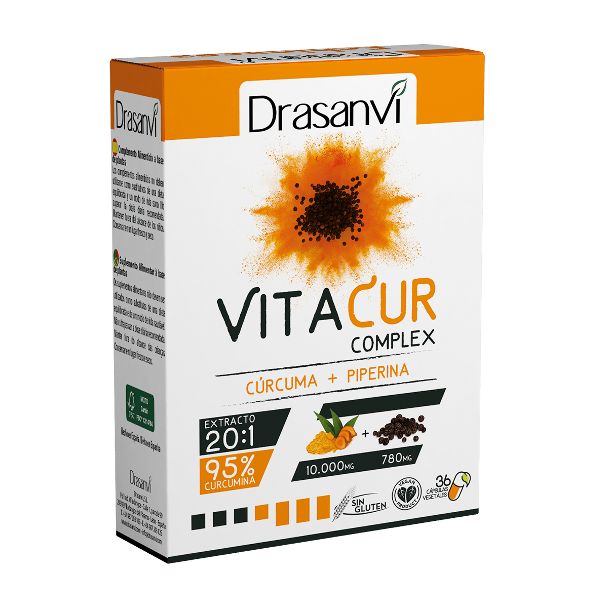

Fitoterapia
Sección fitoterapia
La fitoterapia utiliza las plantas medicinales para prevenir o sanar
una enfermedad o bien para curar pequeños trastornos como se ha hecho
tradicionalmente: con el uso de las plantas medicinales consiste en
usar especies vegetales y sus derivados para prevenir, curar o aliviar
síntomas y enfermedades. Pues, las plantas constituyen un verdadero
arsenal químico gracias a su complejo metabolismo.
Conoce nuestras marcas de productos ofertados
En Aboca innovamos a través del estudio de la fisiopatología y de las sustancias vegetales, buscando en la naturaleza las respuestas para la salud del ser humano, respetando su organismo y el medioambiente.
Los productos Apoteca Natura están formulados en exclusiva para las farmacias de nuestra red, siguiendo estándares de naturalidad que respetan la fisiología del organismo y el medioambiente, de acuerdo con nuestro Reglamento Apoteca Natura.
Los complementos alimenticios y fitoterapéuticos, Algēmica se encuentran exclusivamente en centros especializados en suplementación regenerativa, establecimientos formados científicamente donde podrán asesorarle ampliamente sobre su salud con total confianza profesional como la Farmacia Purgimon Feliu.Los complementos Algēmica están formulados con ingredientes de máxima calidad, naturalidad y eficacia. Todos están argumentados con estudios científicos que avalan sus concentraciones y aplicaciones terapéuticas.
Drasanvi es lider en a nivel nacional e internacional en el desarrollo, distribución y comercialización de suplementos alimenticios, nutrición deportiva, alimentación bio y cosmética ecológica.
En Neovital Health creemos en la naturaleza, por eso elaboramos complementos alimenticios, tanto para niños como para adultos, a base plantas y hongos medicinales, oligoelementos, vitaminas y minerales. Nuestro compromiso, ofrecer productos naturales que ayuden a mejorar la salud y la calidad de vida de las personas.
Elegimos nuestros ingredientes de forma meticulosa para asegurarnos la máxima calidad y eficacia. Del mismo modo, buscamos fórmulas sinérgicas basadas en los principios fisiológicos del cuerpo humano para garantizar el mejor resultado.